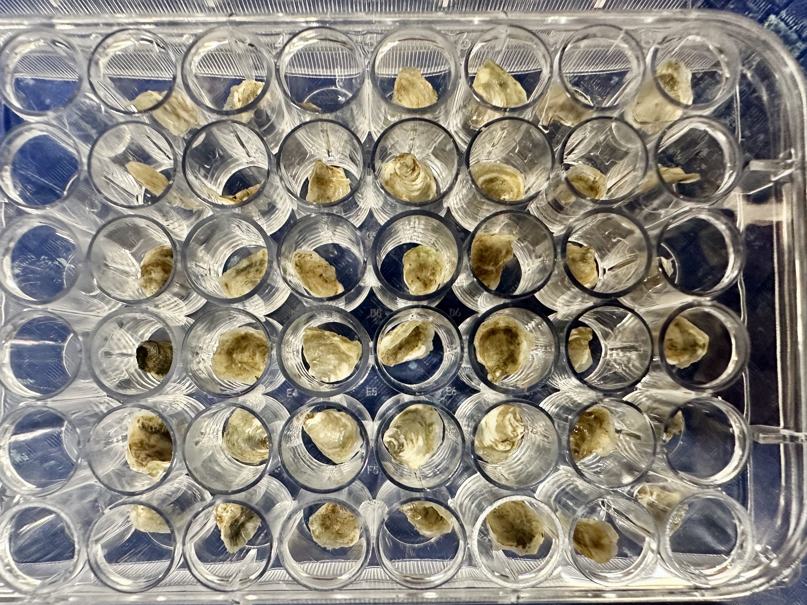
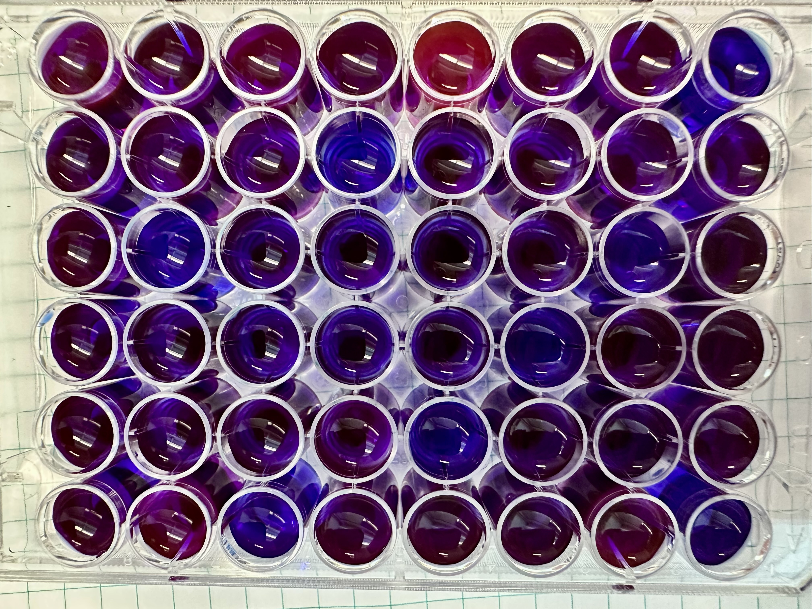
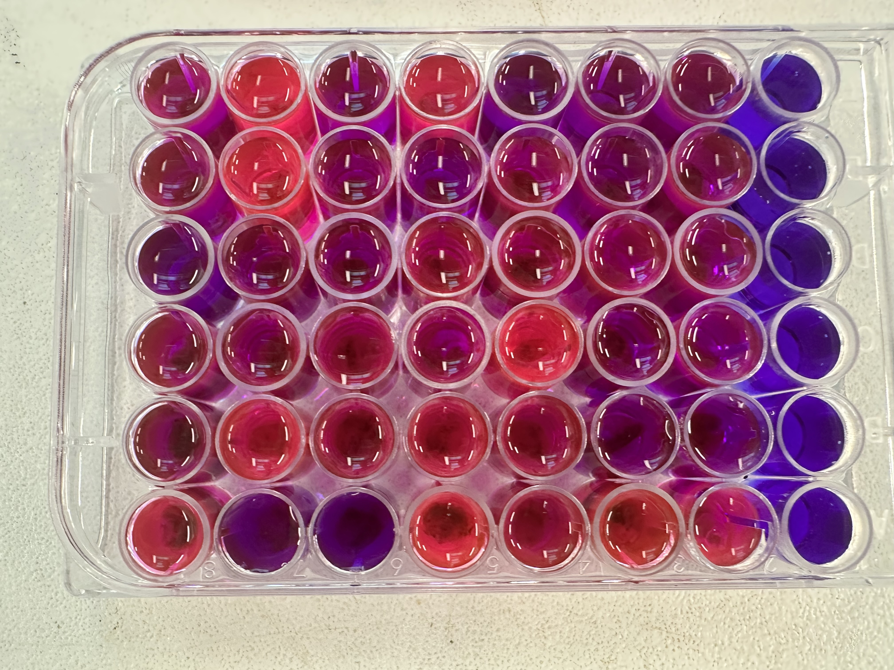
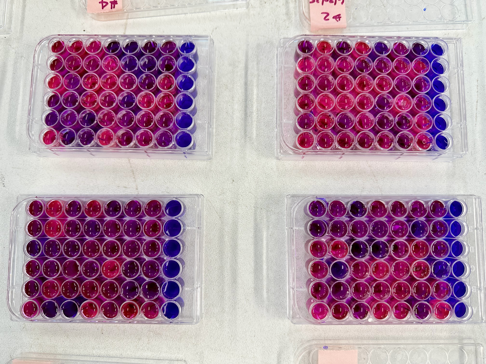

viewof plateType = Inputs.select(
[
"96-well plate (0.250 mL/well)",
"48-well plate (1 mL/well)",
"24-well plate (2 mL/well)",
"12-well plate (4 mL/well)",
"6-well plate (10 mL/well)",
"Custom volume"
],
{
label: "Plate type:",
value: "96-well plate (0.250 mL/well)"
}
)
viewof numPlates = Inputs.range([1, 80], {
label: "Number of plates:",
value: 1,
step: 1
})
viewof customVolume = Inputs.range([1, 20000], {
label: "Custom total volume (mL):",
value: 35,
step: 1,
disabled: plateType !== "Custom volume"
})
viewof extraPercent = Inputs.range([0, 20], {
label: "Extra volume for safety (%):",
value: 10,
step: 5
})
// Calculations
plateConfigs = new Map([
["96-well plate (0.250 mL/well)", { wells: 96, wellVolume: 0.250 }],
["48-well plate (1 mL/well)", { wells: 48, wellVolume: 1 }],
["24-well plate (2 mL/well)", { wells: 24, wellVolume: 2 }],
["12-well plate (4 mL/well)", { wells: 12, wellVolume: 4 }],
["6-well plate (10 mL/well)", { wells: 6, wellVolume: 10 }],
["Custom volume", { wells: null, wellVolume: null }]
])
plateConfig = plateConfigs.get(plateType)
plateVolume = plateType === "Custom volume" ? customVolume : plateConfig.wells * plateConfig.wellVolume
totalBaseVolume = plateVolume * numPlates
totalVolume = totalBaseVolume * (1 + extraPercent / 100)
seawaterVolume = totalVolume * 0.98666
resazurinVolume = totalVolume * 0.00222
dmsoVolume = totalVolume * 0.001
antibioticVolume = totalVolume * 0.01
// Helper function to format volumes appropriately
function formatVolume(volume) {
if (volume >= 1) {
return volume.toFixed(2) + " mL";
} else {
return (volume * 1000).toFixed(0) + " µL";
}
}
// Display results
html`
<div style="background: #f8f9fa; padding: 20px; border-radius: 8px; margin: 20px 0;">
<h3 style="color: #2c3e50; margin-top: 0;">📋 Recipe for ${totalVolume.toFixed(1)} mL Working Solution</h3>
<div style="background: white; padding: 15px; border-radius: 5px; margin: 10px 0;">
<p><strong>Experimental setup:</strong> ${numPlates} × ${plateType}
${plateType !== "Custom volume" ? `(${plateConfig.wells} wells × ${plateConfig.wellVolume.toFixed(3)} mL/well = ${plateVolume.toFixed(1)} mL per plate; ${numPlates} plates = ${totalBaseVolume.toFixed(1)} mL before safety)` : ''}</p>
<p><strong>Per-well default:</strong> ${plateType === "Custom volume" ? "Custom volume" : `${plateConfig.wellVolume.toFixed(3)} mL per well`}</p>
<p><strong>Safety margin:</strong> +${extraPercent}% extra volume</p>
</div>
<div style="background: white; padding: 15px; border-radius: 5px;">
<h4 style="color: #27ae60; margin-top: 0;">🧪 Required Ingredients:</h4>
<ul style="font-size: 16px; line-height: 1.8;">
<li><strong>${formatVolume(seawaterVolume)}</strong> filtered seawater (DI water with Instant Ocean adjusted to 23-25 ppt or filtered <1μm seawater)</li>
<li><strong>${formatVolume(resazurinVolume)}</strong> resazurin stock solution (from step 1 above)</li>
<li><strong>${formatVolume(dmsoVolume)}</strong> DMSO</li>
<li><strong>${formatVolume(antibioticVolume)}</strong> antibiotic solution (100x Penn/Strep & 100x Fungizone)</li>
</ul>
</div>
<div style="background: #fff3cd; padding: 10px; border-radius: 5px; margin-top: 15px; font-size: 14px;">
<strong>💡 Tip:</strong> Remember to thaw the antibiotic solution in the dark before use, and store the resazurin stock solution in a dark fridge or freezer.
</div>
</div>
`Blue Notes and Bivalves
Exploring oyster metabolism with a jazzy resazurin twist

Landing page for quick info on where we are with implementing easy resazurin metabolism assays for oysters. Please explore the Github Repo, glimpse real-time activity in from the lab here, and dive deeper with the Canonical Protocol.
📖 New: Manuscript
Huffmyer AS, N Ozguner, M Baird, C Elvrum, C Kounellas, D Dicksion, SJ White, L Plough, MR Gavery, N Krebs, W Walton, J Small, M Pitsenbarger, H Ealy-Whitfield, S Roberts. From blue to pink: Resazurin as a high-throughput proxy for metabolic rate in oysters. In review. PeerJ. Available on bioRxiv at http://doi.org/10.1101/2025.11.06.686367.
Summary
This protocol uses a resazurin-based assay to measure individual metabolic responses to elevated temperature stress over a 4-5-hour period. Resazurin is a redox-sensitive dye that fluoresces as it is reduced by cellular respiration, providing a proxy for metabolic activity. Individuals are incubated in a resazurin working solution at a high temperature (e.g., ~42°C), and metabolic activity is monitored through fluorescence measurements taken at hourly intervals. Fluorescence measurements are conducted using an excitation wavelength of 530 nm (e.g., a 528/20 nm bandpass filter) and an emission wavelength of 590 nm (e.g., a 590/20 nm bandpass filter) using a fluorescence plate reader.

Highlights to date
• Metabolic rate is a reliable predictor of short-term stress resilience — oysters that suppress metabolic activity under stress tend to survive better than those with heightened activity in laboratory tests.
• Rapid assessment is possible — metabolism can be measured rapidly at at high replication, within hours using the resazurin assay, eliminating the need for long-term trials or multiple days of traditional respiration measurements.
• Genetic background drives metabolic performance — consistent family-level and line-level differences demonstrate that stress-tolerant metabolic traits are heritable.
• Assay is scalable across life stages and conditions — works effectively from tiny spat (~7 mm) to adult oysters, across temperature and salinity stressors.
• Parental and ploidy effects matter — offspring stress resistance is affected by parental histry, and diploid vs triploid oysters show distinct metabolic signatures.
• High sensitivity measurements — fluorescence measurements provide highly sensitive measurements of oyster metabolism.
Preparing solutions
To prepare the resazurin assay solutions, first make a stock by combining resazurin salt with water and a small amount of DMSO. Store this stock in a dark refrigerator or freezer. The working solution consists primarily of seawater (about 98.5%), with small proportions of resazurin stock (0.2%), DMSO (0.1%), and an antibiotic/antifungal solution (1%). Adjust the total volume based on the number and size of organisms being tested, ensuring animals are fully submerged. Trials are typically scaled for small (≤7 mm), medium (15–40 mm), or large (>40 mm) seed using appropriately sized containers. See our widget below to calculate the solutions required! See our Canonical Protocol for further details.
Interactive Recipe Calculator
Use this calculator to automatically determine the required amounts of each ingredient based on your experimental setup.
Examples of resazurin plates




Recent Slidedecks


Data Explorer
Direct link: http://resazur.in/explorer